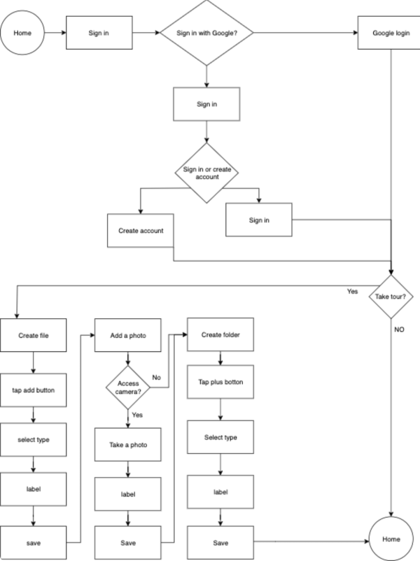
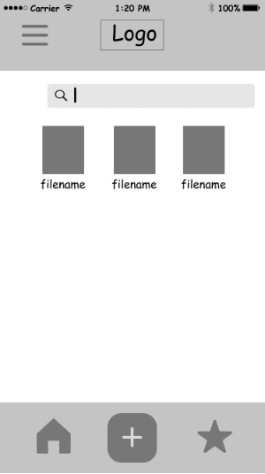
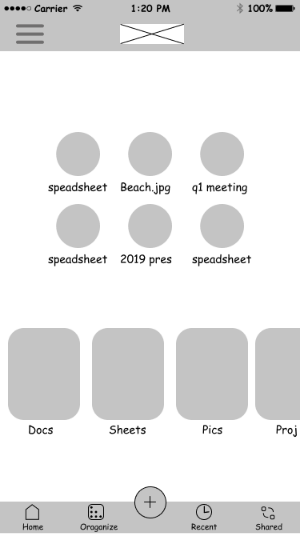

Cloud Storage App
Overview
- Create a unique cloud storage app that could thrive in the current market.
- Stakeholder: Grading team of product deisgners.
- Time to complete: 2 months
- Tools: Figma, Usability Hub, Google Forms, Google Draw, Invision
- Deliverables: Hifi Prototype (desktop and app), Marketing website mockup (desktop and mobile) and branding with style guide.
Problem
Standing out in the cloud storage market and delivering an experience that is unique and truly helpful.
Solution
A gamified approach to organizing. The survey results showed that most did not feel they had their storage organized. They didn't need more features that made it more complicated they needed to simply organize their content and know when something is updated.


User Surveys
- Are there benefits to using storage apps?
- If you kept all your digital info in one spot what would be most important?
- What is the primary reason you use these kinds of apps?
Competitive analysis
- Strengths: Notebook organization differentiates them in the market.
- Weakness: Notebooks might not work for every project.
- Opportunity: They could fill a specific niche rather than stay general.
- Threats: Google and dropbox.
- Strengths: Google has phones and computers to promote the ecosystem. The navigation menu is very easy to access and creates a user-friendly interface.
- Weakness: General use application. Could have a niche or templates to customize.
- Opportunity: Make the drive work with other document apps.
- Threats: Dropbox paper and its more custom forms and documents.
- Strengths: Google has phones and computers to promote the ecosystem. The navigation menu is very easy to access and creates a user-friendly interface.
- Weakness: General use application. Could have a niche or templates to customize.
- Opportunity: Make the drive work with other document apps.
- Threats: Dropbox paper and its more custom forms and documents.
Personas

Mike Gonzalez 31, software developer
- Frustrations:
- -Missing an updated doc
- -Difficulty staying organized
- -Apps dont work together

Ronni Spiers 31, Occupational therapist.
- Frustrations:
- -Setting up and staying organized takes too much time
- -Difficulty sharing
- -Storage and org apps don't work with what she uses
User stories
Taking the user stories that aligned with the user personas and building them into the MVP

User flows
Wireframing
After wireframing and getting protoype set up for the 1 I then realized it didn’t make organizing any easier and went back and started over and came up with 2
 Usability testing
- Tested:
- - Signing up for an account
- - Adding a piece of content
- - Organizing a piece of content
Changes:
- Storage bar moved and days dotting moved up encourage organization and solve main problem.
- Selecting multiple pieces of content wasn't a clear process
Branding
Dotlets is a simple, elegant and encouraging brand and the colors chosen here show a earthy and grounded feel. The pinkish color (F7996A) is more of a playful color than the rest of the others and gives a dash of elegance as well. I chose the Krub font beacuse of the nice pairing with the Katibeh the easy to read krub is also funtional with many weights to create a sense of order and simplicity with mainly using one font. The whole brand is minimalist to the core.


Hifi mockups
After some feedback I was able to make the marketing website simplier and more cohesive.


Adding shadows so it is easier to view daily goals after first round of feedback. Making the days dotting section. easier to see and understand by adding days I changed the colors to match from the final style guide.


Preference testing
Doing some simple testing with usability hub I was able to make some quick decisions about the app navigation and the CTA button on the marketing site.

Preference testing showed the orange button to win over the white one.


The figure below shows results for a illustration that I wasn't sure about until the testing results came in

Conclusion
What worked? - The dropping and dragging action, The branding What didn't? - the first draft of wireframes and general direction. What were your doubts going into the project? Can I actually make a unique product? What surprised you the most? - how srtating over was a good idea. What would you have done differently if given more time? I would rework test and rework the oragnize feature. What did you learn while doing this project? - It’s important to listen to the data and care about making a differrnce for people. How will you use that information in the future? I can take the concept and feeling to any project and match it up against the data.